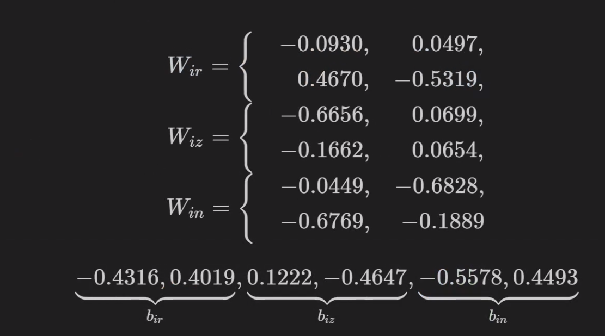

1. Gated Recurrent Units (GRUs)¶
Update Gate
Weights between old and new (candidate) hidden state
\(\begin{align*} h_{new} &= tanh(t_h+t_x) \\ h' &= h_{new} * (1 - z) + h_{old} * z \end{align*}\)
Reset Gate
Weights between input and hidden state
\(h_{new} = tanh(r*t_h + t_x)\)
GRU Cell
\(h' = tanh(r*t_h + t_x) * (1-z) + h*z\)

1.1. GRU Cell¶
RNN is a special case of GRU when \(r=1\) and \(z=0\).
To really understand the flow of information inside the GRU cell, I suggest you try these exercises:
first, learn to look past (or literally ignore) the internals of the gates: both
randzare simply values between zero and one (for each hidden dimension)pretend
r=1; can you see that the resulting n is equivalent to the output of a simple RNN?keep
r=1and now pretendz=0; can you see that the new hidden stateh'is equivalent to the output of a simple RNN?now pretend
z=1; can you see that the new hidden stateh'is simply a copy of the old hidden state (in other words, the data (x) does not have any effect)?if you decrease
rall the way to zero, the resultingnis less and less influenced by the old hidden stateif you decrease
zall the way to zero, the new hidden stateh'is closer and closer tonfor
r=0andz=0, the cell becomes equivalent to a linear layer followed by a Tanh activation function (in other words, the old hidden state (h) does not have any effect)
1.2. Imports¶
import numpy as np
import torch
import torch.optim as optim
import torch.nn as nn
import torch.nn.functional as F
from torch.utils.data import DataLoader, Dataset, random_split, TensorDataset
from torch.nn.utils import rnn as rnn_utils
1.3. GRU Cell¶
n_features = 2
hidden_dim = 2
torch.manual_seed(17)
gru_cell = nn.GRUCell(input_size=n_features, hidden_size=hidden_dim)
gru_state = gru_cell.state_dict()
gru_state
OrderedDict([('weight_ih',
tensor([[-0.0930, 0.0497],
[ 0.4670, -0.5319],
[-0.6656, 0.0699],
[-0.1662, 0.0654],
[-0.0449, -0.6828],
[-0.6769, -0.1889]])),
('weight_hh',
tensor([[-0.4167, -0.4352],
[-0.2060, -0.3989],
[-0.7070, -0.5083],
[ 0.1418, 0.0930],
[-0.5729, -0.5700],
[-0.1818, -0.6691]])),
('bias_ih',
tensor([-0.4316, 0.4019, 0.1222, -0.4647, -0.5578, 0.4493])),
('bias_hh',
tensor([-0.6800, 0.4422, -0.3559, -0.0279, 0.6553, 0.2918]))])
Wi, bi = gru_state['weight_ih'], gru_state['bias_ih']
Wh, bh = gru_state['weight_hh'], gru_state['bias_hh']
print(Wi.shape, Wh.shape)
print(bi.shape, bh.shape)
torch.Size([6, 2]) torch.Size([6, 2])
torch.Size([6]) torch.Size([6])
1.3.1. Splitting up the weight_ih as an example¶

Wir, Wiz, Win = Wi.split(hidden_dim, dim=0)
bir, biz, bin = bi.split(hidden_dim, dim=0)
Whr, Whz, Whn = Wh.split(hidden_dim, dim=0)
bhr, bhz, bhn = bh.split(hidden_dim, dim=0)
Wxr, bxr
(tensor([[-0.0930, 0.0497],
[ 0.4670, -0.5319]]),
tensor([-0.4316, 0.4019]))
1.4. Creating the Linear Layers¶
We can use the weights and biases to create the corresponding linear layers:
def linear_layers(Wi, bi, Wh, bh):
hidden_dim, n_features = Wi.size()
lin_input = nn.Linear(n_features, hidden_dim)
lin_input.load_state_dict({'weight': Wi, 'bias': bi})
lin_hidden = nn.Linear(hidden_dim, hidden_dim)
lin_hidden.load_state_dict({'weight': Wh, 'bias': bh})
return lin_hidden, lin_input
# reset gate - red
r_hidden, r_input = linear_layers(Wir, bir, Whr, bhr)
# update gate - blue
z_hidden, z_input = linear_layers(Wiz, biz, Whz, bhz)
# candidate state - black
n_hidden, n_input = linear_layers(Win, bin, Whn, bhn)
def reset_gate(h, x):
thr = r_hidden(h)
txr = r_input(x)
r = torch.sigmoid(thr + txr)
return r # red
def update_gate(h, x):
thz = z_hidden(h)
txz = z_input(x)
z = torch.sigmoid(thz + txz)
return z # blue
def candidate_n(h, x, r):
thn = n_hidden(h)
txn = n_input(x)
n = torch.tanh(r * thn + txn)
return n # black
1.5. Data Generation¶
def generate_sequences(n=128, variable_len=False, seed=13):
basic_corners = np.array([[-1, -1], [-1, 1], [1, 1], [1, -1]])
np.random.seed(seed)
bases = np.random.randint(4, size=n)
if variable_len:
lengths = np.random.randint(3, size=n) + 2
else:
lengths = [4] * n
directions = np.random.randint(2, size=n)
points = [basic_corners[[(b + i) % 4 for i in range(4)]][slice(None, None, d*2-1)][:l] + np.random.randn(l, 2) * 0.1 for b, d, l in zip(bases, directions, lengths)]
return points, directions
points, directions = generate_sequences(n=128, seed=13)
initial_hidden = torch.zeros(1, hidden_dim)
X = torch.as_tensor(points[0]).float()
first_corner = X[0:1]
r = reset_gate(initial_hidden, first_corner)
r
tensor([[0.2387, 0.6928]], grad_fn=<SigmoidBackward>)
Important
The reset gate scales each hidden dimension independently. It can completely suppress the values from one of the hidden dimensions while letting the other pass unchallenged. In geometrical terms, it means that the hidden space may shrink in one direction while stretching in the other.
z = update_gate(initial_hidden, first_corner)
z
tensor([[0.2984, 0.3540]], grad_fn=<SigmoidBackward>)
The reset gate is an input for the candidate hidden state (n)
n = candidate_n(initial_hidden, first_corner, r)
n
tensor([[-0.8032, -0.2275]], grad_fn=<TanhBackward>)
The update gate is telling us to keep 29.84% of the first and 35.40% of the second dimensions of the initial hidden state. The remaining 60.16% and 64.6%, respectively, are coming from the candidate hidden
state (n).
h_prime = n*(1-z) + initial_hidden*z
h_prime
tensor([[-0.5635, -0.1470]], grad_fn=<AddBackward0>)
1.5.1. Verify against GRU Cell¶
We can see the nn.GRUCell() had encapsulated all the above steps. Effectively, a GRU consists of six linear layers, with
four of them require sigmoid action to learn
two reset gates, each for hidden state and input respectively, and
two update gates, each for hidden state and input respectively
two require tanh() activation for learning the new candidate hidden state.
gru_cell(first_corner)
tensor([[-0.5635, -0.1470]], grad_fn=<AddBackward0>)